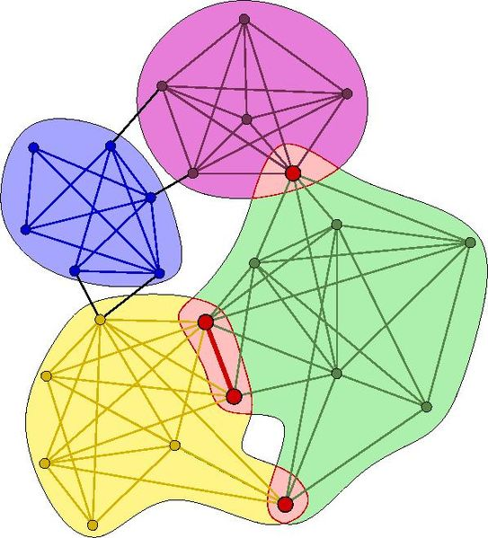
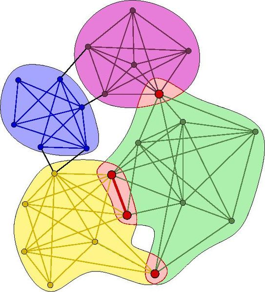

Network Communities
Through community detection we aim to discover some structural correlations between the artists in our network.
There are different algorithms that can be used with this purpose, from global ones like Louvain algorithm,to local ones like k-clique algorithm, that allow nodes to be part simultaneously of multiple communities.
Communities with Louvain
Here we give a visualization of the communities identified for the Gcc of our artists Network, where nodes belonging to each community are marked in a different color. Pretty isn't it?
The algorithm
Louvain algorithm relies on modularity optimization and evaluates how much more densely connected are the nodes within a community,compared to their density of connection if they were in a random network.
The modularity of the GCC of our Artists Network is ca 0.80, which is indicating a strong community structure, with a total of 37 communities.
Top artists of some communties
...how they relate to each other? Let's see a couple of interesting examples.
We found Björk & Will Gregory as leading artists in community 3; they are both from the electronic music genre, where Spike is a producer that has worked with plenty of artists.
In Community 7 we have "Aretha Franklin & Jerry Wexler & Tom Dowd". All three of them are connected through Atlantic Records label. Wexler, was a music journalist, who became a producer and later a partner at the Atlantic, which under his rule became a major player in the music industry. Dowd was the record engineer for the Atlantic. Finally, Aretha Franklin, has been associated with Atlantic records for 12 years between 1967 and 1979, publishing 15 of her albums with them.
K-cliques
In our Network we include artists of different types, from musicians to producers, therefore we would expect them to parttake in multiple communites. Maybe two singers who share the similar music genre, are in reality also part of two completely distinguishable groups, for example two different record firmas. Louvain partition does not allow to verify that, but another method, the k-clique partition, does.
How adjacent cliques look?


The algorithm
It is based on the Clique Percolation Method (CPM). The scope is to find overlapping communities and the core idea behind it is that intercommunity edges are less likely to form cliques than internal edges of the community.
- A k-clique community is given by the union of all k-cliques that can be reached from each other through a series of adjacent k-cliques.
- Two k-cliques are adjacent when they share k-1 nodes.
- A k-clique is defined as a complete graph with k vertices.
Our communities in detail
In our artists network there are 8161 cliques, with length between 2 and 116, most of which have very small size. For ease of computation and graphs readibility, we choose to select 25 as minimum clique size, which returns 31 communities with 1166 artists.
Here the hierarchical structure of the Gcc of the artist network is clearly visible. Moreover, you can easily spot the arists that are part of multiple communities, marked in bright yellow.
You can also see the biggest names: Keith Richars, Mick Jagger, Paul McCartey...
Sentiment Analysis
We have analyzed communities artist by artist, lyric by lyric. We asked ourselves questions like:
- How rich is the vocabulary used in this communities?
- Can we capture some uniqueness in the songs of the artists of each community?
- Can we spot communities of depressed artists?
Lexical Complexity
We have calculated that the number of unique words across all communities is 23551, small compared to the current english language. Still, let's see how artists compare for orginal content in their lyrics.

The podium is for the community of which Suzie Katayama and Beck are part of, in which artists re-use only the 75% of the words. Seems much? Well, at the lowest level of lexical complexity we find Keith Richards, part of three communities with only around 10% of unique words!
We hand picked the most interesting for you! We are going to look at the most used words, at the general sentiment that drive these communities (is it always love as we expect?) and at how the sentiment is distributed in each lyric.
Let's now dig more into some communities...
- Community 2: OutKast & André 3000
- Community 4: Earth, Wind & Fire & Maurice White
- Community 12: Björk & Mandy Parnell
- Community 24: Paul McCartney & Keith Richards
- Community 27: Björk & & Mark Spike Stent
WordClouds
In these nice WordClouds you can easily see the most frequent words in each of the selected communities. Here we parsed out for you the words common to all the communities such as "love" or "babe" as well as filler words such as "don't" and "i'm". Top words per selected community:
- Community 2 : "git", "nigga"
- Community 4 : "dee", "amity"
- Community 12 : "unconscious", "björk"
- Community 24 : 'angie', "poussé'
- Community 27 : "unconscious", "úmmm"
In Community 2: OutKast & André 3000. We find a lot of slang such as "nigga","niggas","hoes" and so on.
Givent that André 3000 is a rapper, this harsh words makes complete sense in his community.
Observing WordCloud Community 12: björk & Mandy Parnell, we find few words in Icelandic.
In fact Björk is a Icelandic singer, songwriter, record producer, actress, and DJ who works with Mandy Parnell, a British audio mastering engineer.
Here we have a visualization of the sentiment of the selected communities, on a scale (-1,+1).
They appear to be revolving mainly around positive sentiments, but Paul McCartney & Keith Richards who look pretty neutral.
Do you know Earth, Wind & Fire & Maurice White?
Earth, Wind & Fire (abbreviated as EW&F or simply EWF) is an American band that has spanned the musical genres of R&B, soul, funk, jazz, disco, pop, dance, Latin, and Afro pop.
They have been described as one of the most innovative and commercially successful acts of all time.
Rolling Stone called them "innovative, precise yet sensual, calculated yet galvanizing" and declared that the band "changed the sound of black pop".
We here counted the positive lyrics, with an overall sentiment above 0.5, the negative ones, with a sentiment less than -0.5 and the neutral ones in the middle.
What we can see from the results, is that in all the communities there is a sane mix.
That most of the songs are polarized in positive or negative, and that indeed Community "OutKast & André 3000" has a much higher number of negative lyrics, but it is not a deep black hole of despair.